Gold Diggers
Parade
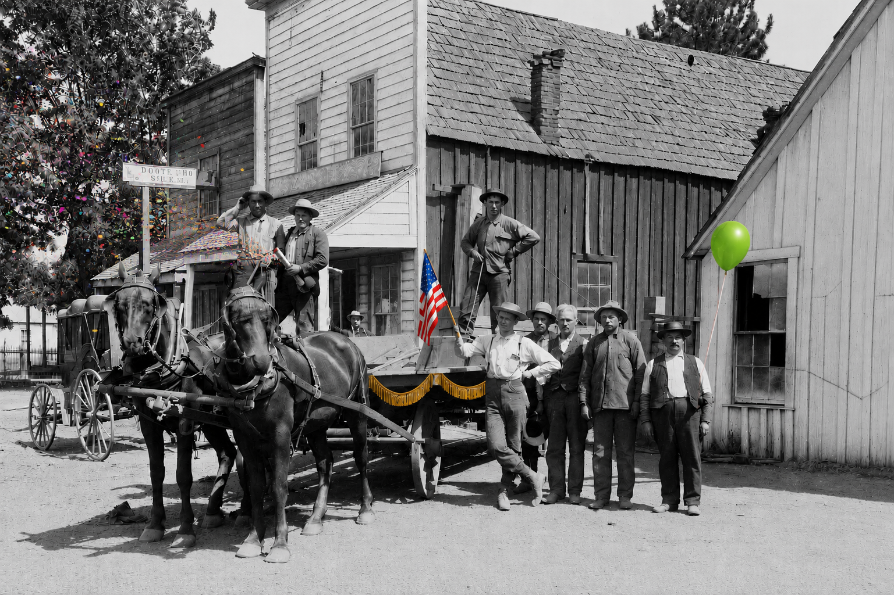
Gold Diggers is Indian Valley's annual celebration of the history, heritage, and community spirit that have shaped Greenville and the surrounding valley for generations.
Inspired in part by the region's Gold Rush history, Gold Diggers has brought residents and visitors together in Greenville each July for more than six decades of traditions, festivities, and community celebration.
Whether you're a lifelong resident or a first-time visitor, we invite you to join us as Greenville celebrates 64 years of community and tradition.
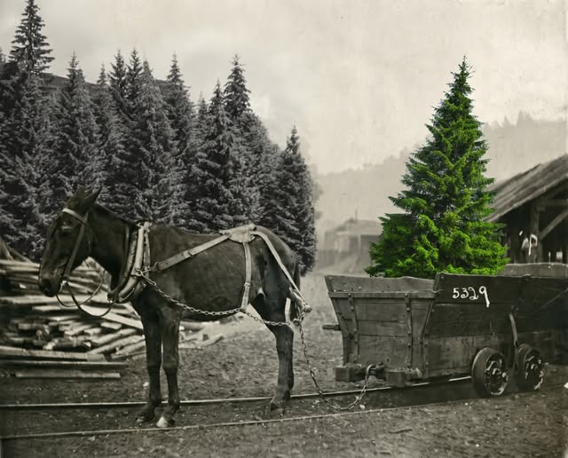
2026Bringing the Green Back to Greenville
This year’s parade honors the residents, businesses, organizations, and neighbors who have remained steadfast throughout Greenville’s rebuilding—and who continue working to restore and strengthen the community.
Michaela “Mickey” Trammell
CEO, The Dixie Fire Canopy Project
Mickey has helped bring hope—and green—back to Greenville through her tremendous work restoring trees and rebuilding the landscape following the Dixie Fire. We are proud to honor her as this year’s Grand Marshal.
Cash Prizes
Cash prizes will be awarded to the floats that best capture the spirit of Bringing the Green Back to Greenville.
Ribbon awards will also be presented across the parade categories. Businesses, clubs, organizations, families, classic cars, horses, walkers, and creative entries of all kinds are encouraged to participate.
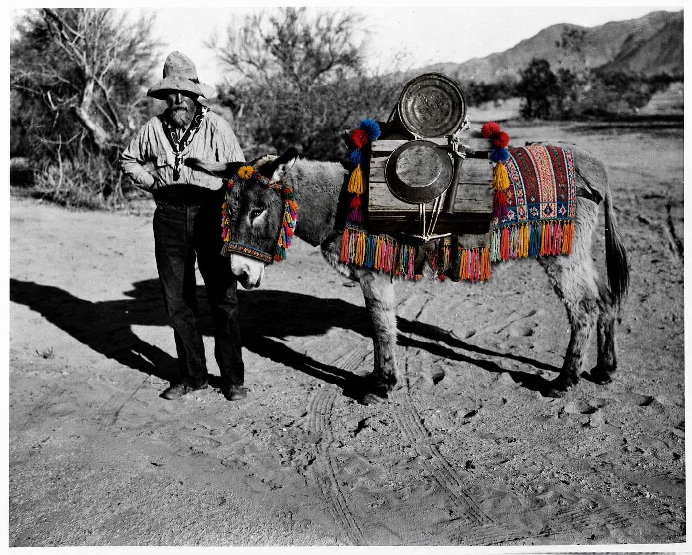
Join
The
Parade
Parade entry is free and open to all. Participants line up at 9:00 AM, with the parade stepping off through downtown Greenville at 10:00 AM.
Parade Entry FormMain Street Market
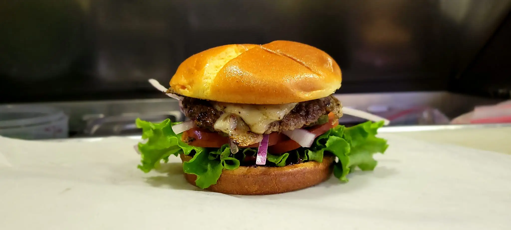
EATCome Hungry
Grab something delicious while you explore Main Street, from savory festival food to sweet treats and refreshing drinks.
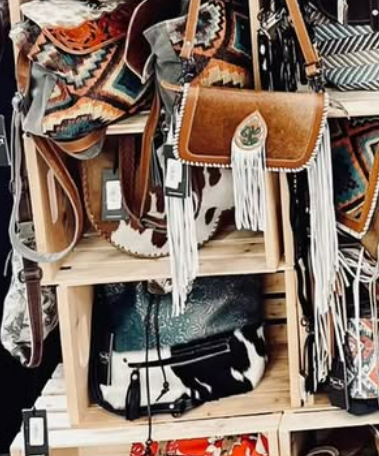
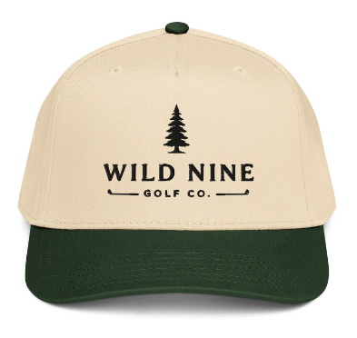
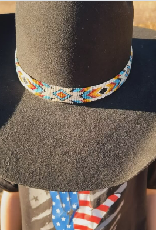
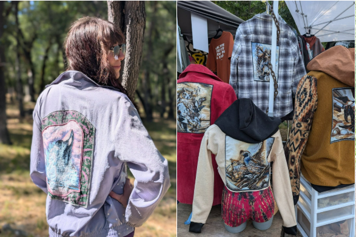
Local Makers
and Retail
Discover clothing, accessories, handmade goods, artisan pieces, gifts, community booths, and unexpected finds throughout the day.
Watermelon
Eating
Contest
Raffle
And More
Street Dance
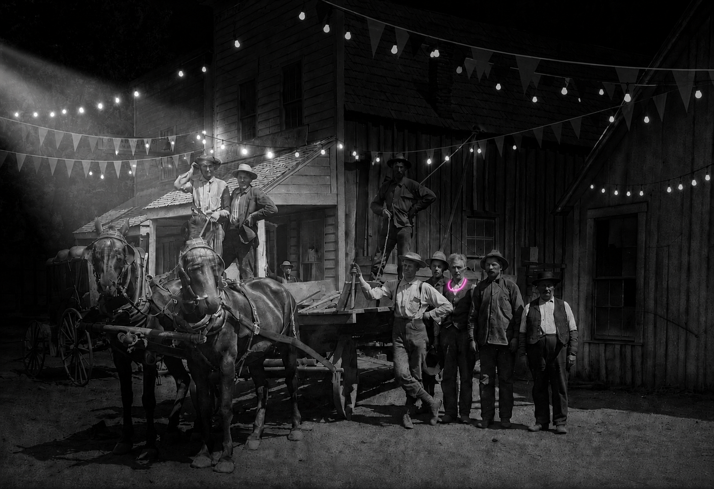
Street Dance festivities begin at 8:00 PM and continue until 11:59 PM. Dance under the stars with live music from Side Fx and a special performance by the Vortex Fire Dancers.
Side Fx
Live music throughout the evening.
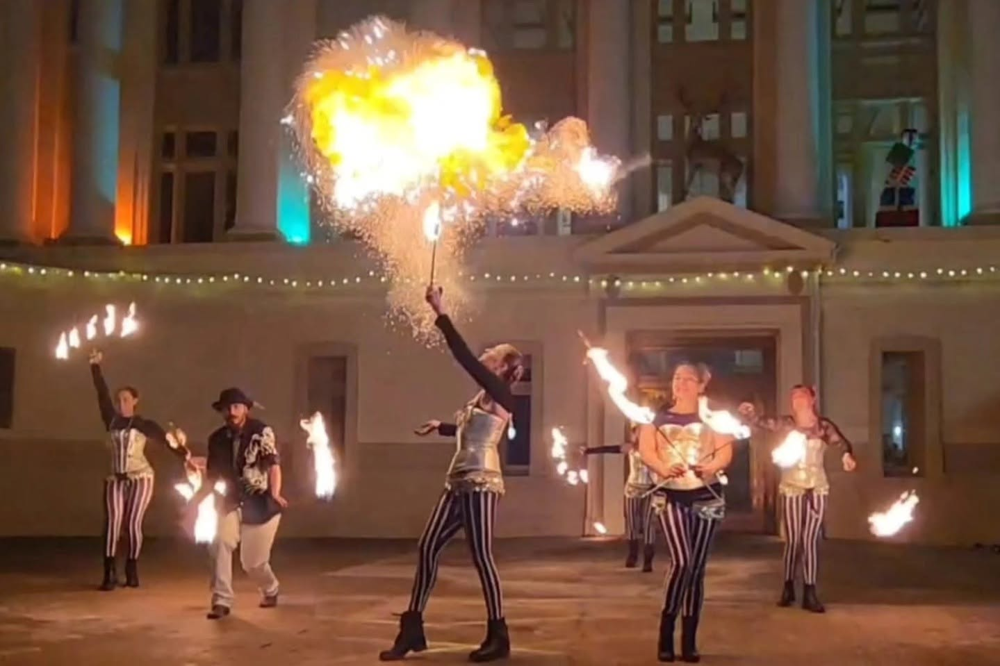
Vortex Fire Dancers
A fiery nighttime performance during the Street Dance.
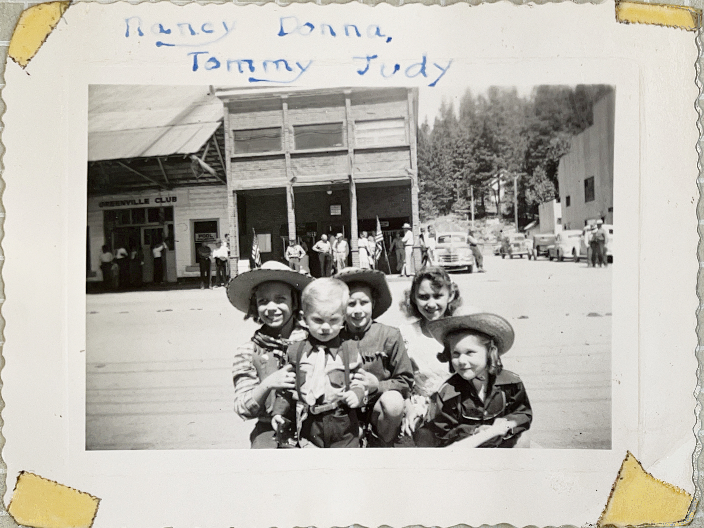
1940sOlder Than
We Thought?
Explore the photographs, memories, and historical research that point to a longer history than many recent accounts describe.
Read the History